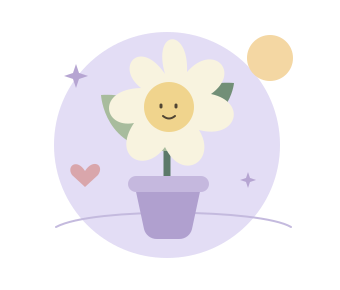

HELLO, LITTLE MOMENT
지금 마음은
어떤 모습인가요?
잘 정리된 말이 아니어도 괜찮아요.
마음을 하나씩 살피며 나만의 길을 찾아봐요.

오늘 내 마음과 가까운 것은?
하나만 골라도 좋아요어떤 마음이어도 괜찮아요. 지금 느끼는 그대로 골라 주세요.
지금 나에게 필요한 시간
편한 것부터 시작해요마음길 코치는 정답을 정해 주기보다,
함께 생각할 작은 질문을 건네요.
A CONVERSATION, AT YOUR PACE
천천히 이야기해요
한 문장도 괜찮아요. 편한 만큼 들려주세요.
마음길 코치AI 연결을 기다리고 있어요
가상 사례만 입력해 주세요. 이 기기의 저장소에 대화를 보관하지 않아요.
SIX SMALL REFLECTIONS
내 마음길 살펴보기
시험도, 진단도 아니에요. 요즘의 나와 가까운 것을 골라요.
1 / 6
첫 번째 문장
교육용으로 표현을 바꾼 문항입니다. 공식 심리검사 결과로 사용하지 않습니다.
A LITTLE ROOM TO BREATHE
잠깐, 숨 고르기
억지로 깊게 쉬지 않아도 괜찮아요. 편한 호흡으로 따라가요.
준비되면 시작해요내 속도로, 편안하게
들이쉬기 4초, 내쉬기 6초를 세 번 반복해요.
불편하거나 어지러우면 멈추고 평소처럼 숨 쉬어 주세요.
ONE SMALL STEP IS ENOUGH
오늘의 한 걸음
크고 멋진 계획보다, 지금 할 수 있는 작은 일 하나.
어떤 한 걸음을 해볼까요?
MY LITTLE STEP
05:00
목표는 지금 이 화면에서만 보관해요. 창을 닫으면 지워져요.